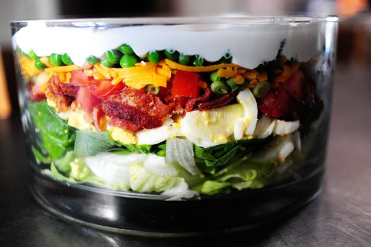

Layered Salad

A spring salad with fresh veggies, egg, and cheese
Ingredients
For the Salad
- 2 heads iceberg lettuce
- 8 oz. fluid baby spinach, washed and dried
- Salt and pepper, to taste
- 8 whole hard boiled eggs, chopped
- 16 oz. bacon, cooked and chopped
- 4 whole tomatoes, chopped
- 1 bunch green onions, thinly sliced
- 8 oz. cheddar cheese, grated
- 10 oz. frozen peas, partially thawed
For the Dressing
- 1/2 c. mayonnaise
- 1/2 c. sour cream
- 1 tbsp. sugar (more to taste)
- Chopped frash dill, for topping
Steps
- To make the salad: Layer the salad ingredients in a clear glass bowl starting with the lettuce, concentrating the ingredients around the perimeter of the bowl and filling in the center with lettuce, if needed. End with the layer of peas.
- To make the dressing: Combine ingredients in a separate bowl and mix well. Pour over the top of the peas and spread to cover, bringing the dressing all the way out to the edges of the bowl. Sprinkle with fresh dill.
- Cover and refrigerate for up to 8 hours. Toss just before serving.